Live at LUCIA
Live R&B every Wednesday 8pm to 12am.
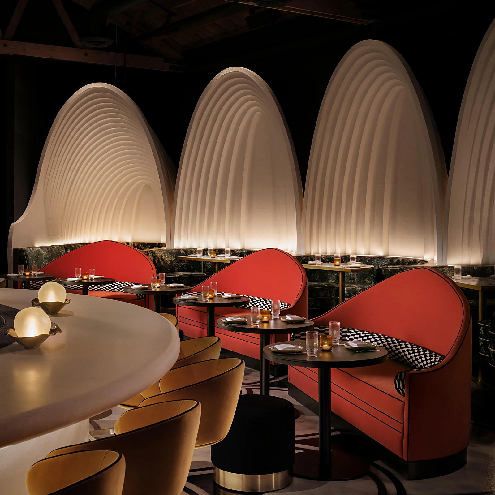
LUCIA reimagines Afro-Caribbean flavors through contemporary techniques, unexpected pairings and influences beyond the region. On Fairfax Avenue in Los Angeles, the experience brings inventive cooking, expressive cocktails and thoughtful hospitality together in a room that moves from dinner into music and late-night conversation.
Yelp named LUCIA No. 19 on its Best New Restaurants of 2026 list.
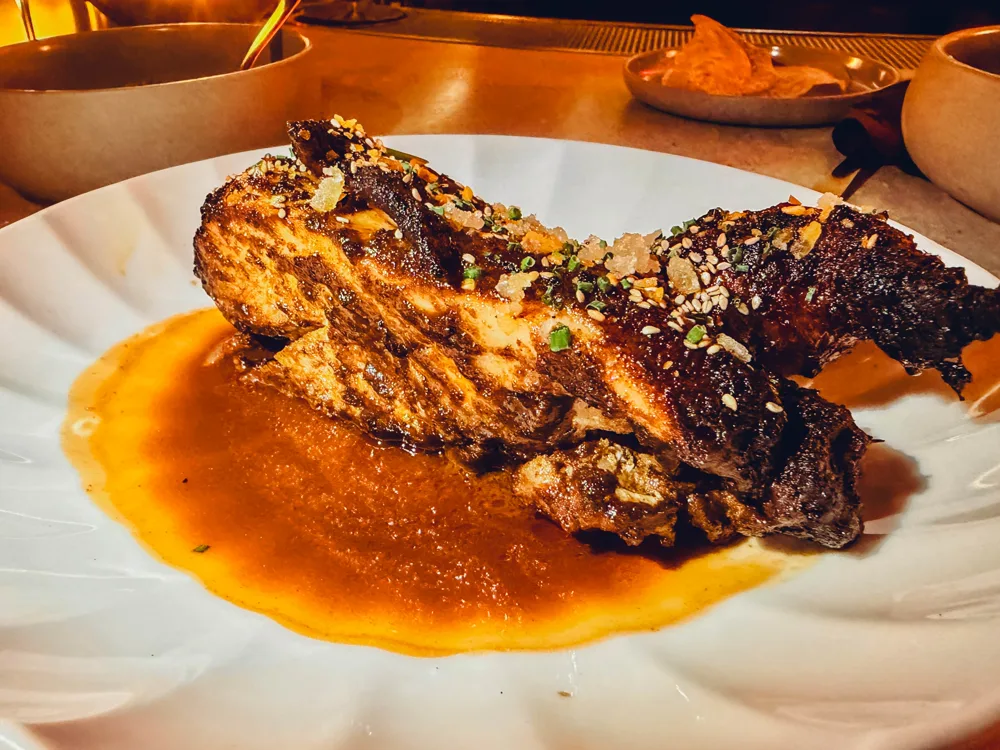
The cooking leans bright and hot — citrus and Scotch bonnet up front, slow-cooked meats and brown butter underneath, rum behind the bar. These four plates are a good place to start.
Dish 1 of 4 — Trini-Chinese Chicken
Malta, ginger, le courage spice blend.
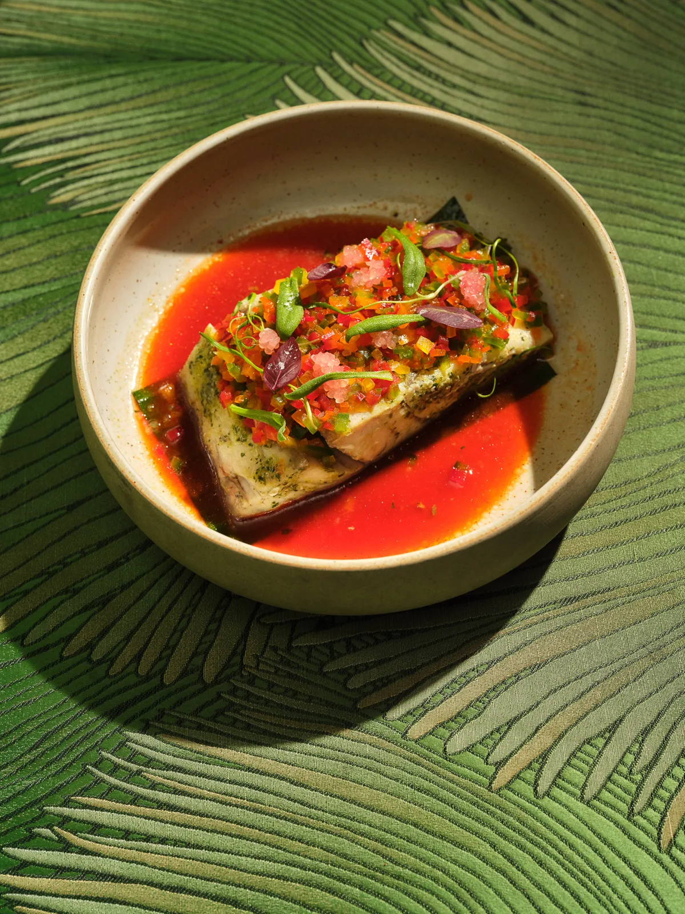
Naranja agria, bell peppers, lime caviar.
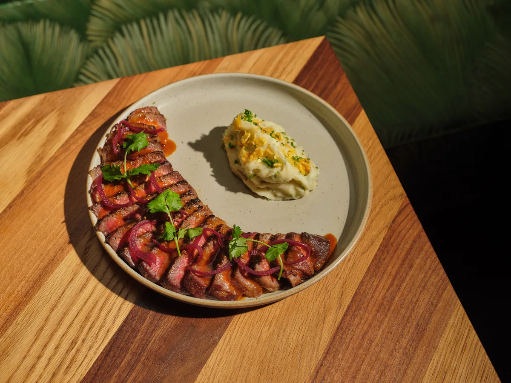
Recaíto, pickled onions, mojo spices.
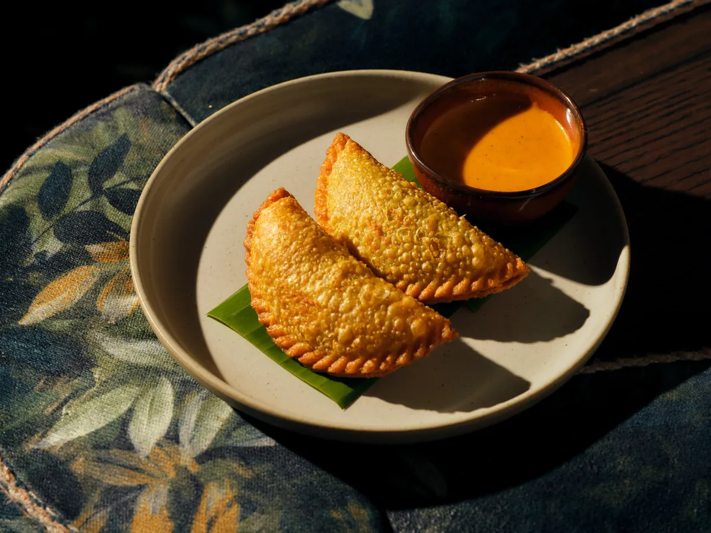
Served with green papaya kuchela.
Ribbed white arches, red banquettes, and a bar that glows into the night.
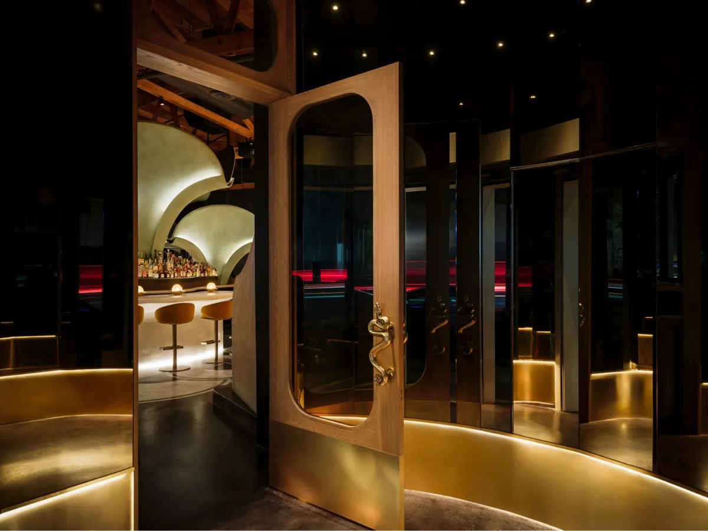
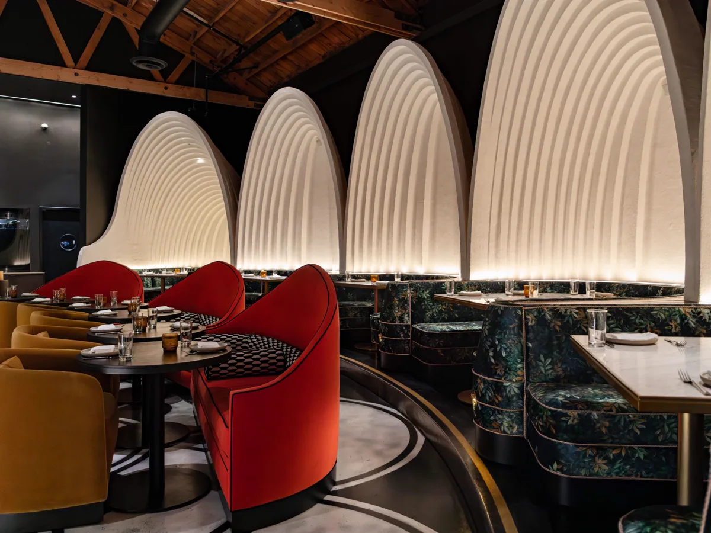
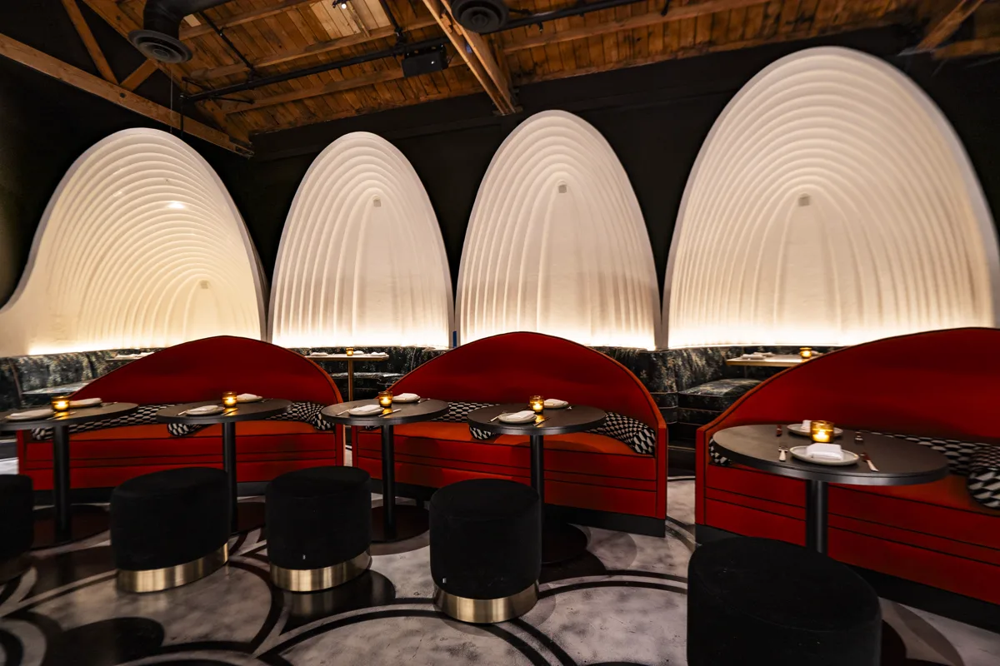
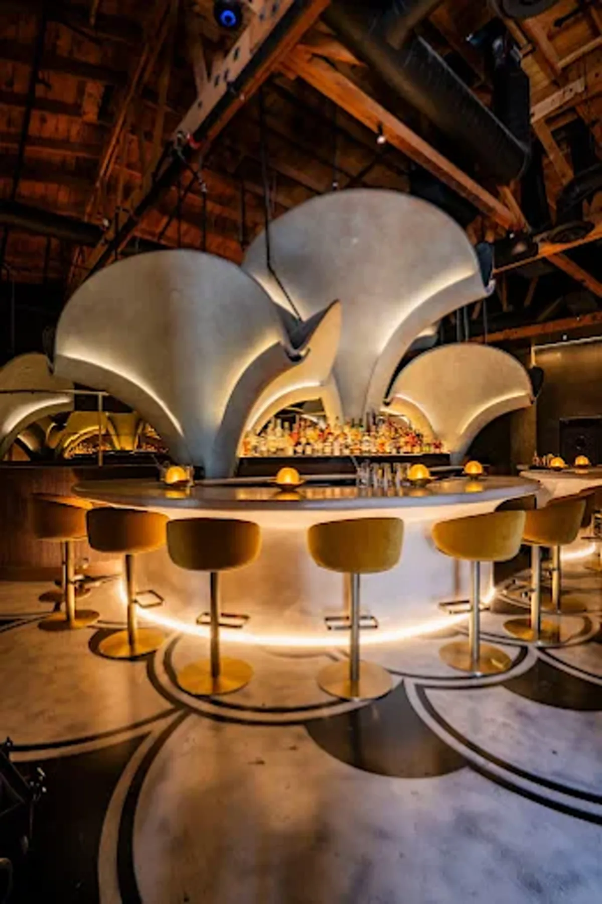
Photo 1 of 4 — The entrance
Live R&B on Wednesdays. Dinner and rotating DJs on Thursdays.
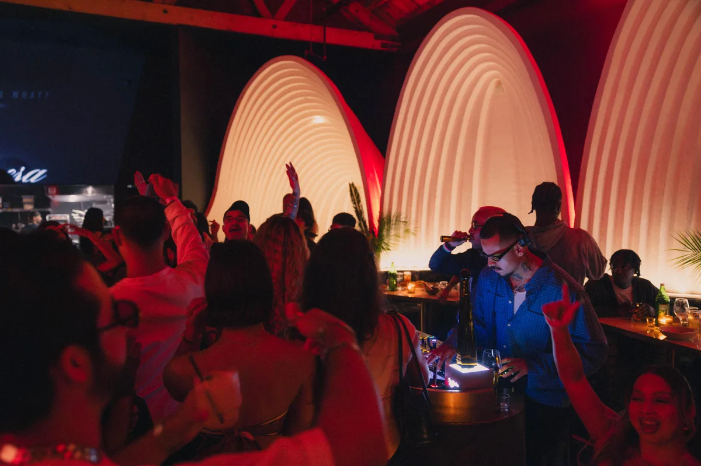
Live R&B every Wednesday 8pm to 12am.
Dinner and music every Thursday 8pm to 12am.
Live R&B every Wednesday 8pm to 12am.
Dinner and music every Thursday 8pm to 12am.
Event 1 of 4 — Live at LUCIA
Host a private dinner, celebration, or full-venue buyout in one of Los Angeles’ most distinctive dining rooms. Mondays and Tuesdays, the room is available for private events only.
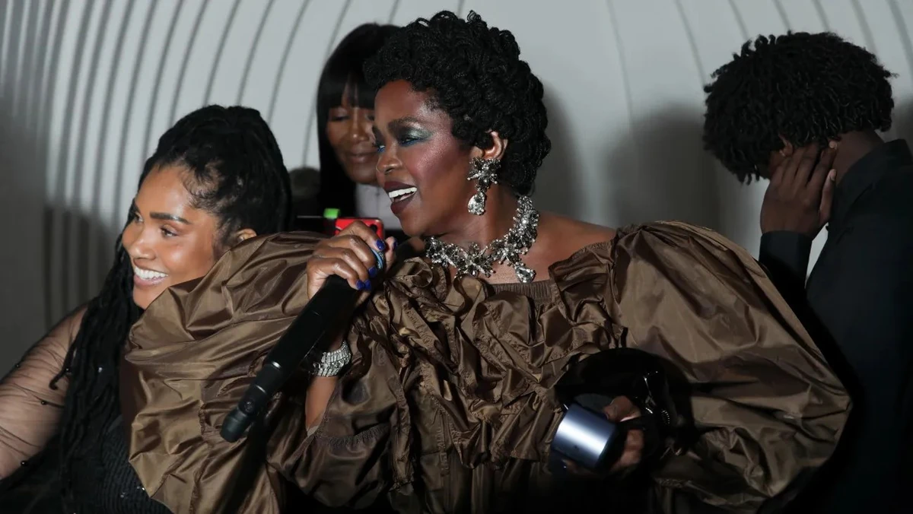
Featured past private eventMs. Lauryn Hill’s BET Awards afterparty — live at LUCIA.
351 N Fairfax Ave
Los Angeles, CA 90036
21+ after 8 PM
Kitchen closes 11:30 PM; last seating 11 PM, Thu–Sun.
Mon–Tue: private events only.
Up to 8 guests.
Parking
Valet available. Street parking may be available nearby.
Attire
Upscale, elegant attire. Dress code
Host a private dinner, celebration, or full-venue buyout at LUCIA.